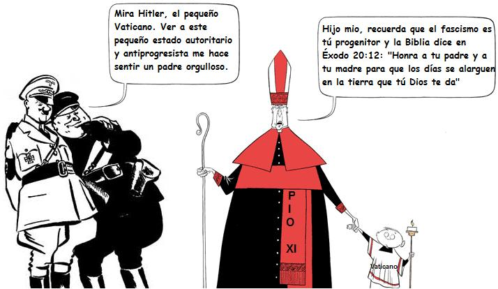

La Federación Nacional del Libre Pensamiento es miembro de la Unión Internacional Humanista y Laica (IHEU)
¡No, no se trata de un lapso de Marilyn Monroe! El “Estado” del Vaticano alcanzó la edad canonica de 80 años, el ultimo 11 de febrero (de 2009). Su papá (papa en italiano) se llama Pio XI (seudónimo heredado de algunas cruzadas asesinas), y su madre se llama del suave nombre de Benito Mussolini, llamado “el Duce” entre dos masacres de antifascistas.
Se lamenta que tal aniversario no haya dado lugar a una gran fiesta o, más cultural, a un gran coloquio internacional sobre la historia del Vaticano, que habría podido dirigir el historiador justo quien es Mgr Richard Williamson, recientemente puesto en estrella sobre la escena de información por una lectura singular de la desaparición (no se atrevería a decir un genocidio) de seis millones de Judíos. Eso habría tenido porte y no habría faltado de apasionar a las muchedumbres.
En una breve alocución, el Papa destacó que “el Estado del Vaticano contiene tesoros de fe, historia, arte, y conserva un patrimonio precioso para la humanidad entera”. Por el contrario, nuestras investigaciones, “puntiagudas”, no encontraron ningún rastro de la más pequeña ratificación de la menor Declaración de los Derechos humanos, o incluso de una condena “del borde de los labios” de cualquier régimen fascista o corporatista. En cuanto a decir que “el Estado” del Vaticano haya ratificado la menor Directiva de la Mesa Internacional del Trabajo, protegiendo los derechos de los trabajadores, se permanece asombrado ante este su digno silencio, digno de Pio XII.
Benedicto XVI no tiene, y es bien comprensible, en ningún caso mencionado las “pequeñas historias” del Vaticano, que es también un patrimonio precioso en el sentido que nos aportan una enseñanza inigualable sobre las torpezas, la lujuria, la crueldad, la avidez y la rapacidad de número de sus antecesores.
El Papa dirigió sus gracias a “todos los que fueron anteriormente y que son protagonistas hoy de la vida del Estado de la Ciudad del Vaticano”. Se sienten la emoción y el amor, pero es bien natural cuando se sabe que el primero “protagonista” fue Benito Mussolini, signatario de los acuerdos del Letrán con los representantes del Papa Pio XI. ¡Era el buen tiempo!
Es verdad, cuando eres joven y que pasas, sobre en la plazza San Pedro, la línea pavimentada que señala la “frontera” del Vaticano, se puede ser emocionado y maravillado por esta línea mágica que nos hace pasar de un mundo a otro. Más viejo, el aspecto artificial de la cosa resulta evidente, y se pensaría más bien a una Disneylandia romano, muy bien construido.
De hecho, el pretendido “Estado” del Vaticano no es más que la criatura de Mussolini. No existe por otra parte nacionalidad vaticana. Habría más funcionarios que trabajan en el Vaticano que “ciudadanos del Vaticano”. Este concepto “ciudadana vaticanesca” por otra parte sobre todo fue útil para exfiltrar a los nazis de Europa en 1945 por la red del “ratslines” (Sectores de las ratas).
¡Si se creen los últimos “canones del liberalismo”, eso querría decir que el Vaticano es el último Estado comunista! El tipo de funcionarios, con relación al tipo de habitantes siendo el criterio del “colectivismo”. ¡Además, todo es propiedad de Estado en el Vaticano!
El Gobierno italiano mantuvo este “Principado” teocrático, dirigido por un jefe absoluto, sin partidos políticos, sin sindicatos libres, sin ninguna forma (incluso el más elemental) de democracia, en particular, electoral, en 1984, por un acuerdo implicando algunas modificaciones del Concordato de 1929. Es por otra parte sobre este último texto que se apoya hoy Silvio Berlusconi en su ofensiva clerical.
La Federación Nacional del Libre Pensamiento sólo podría alegrarse de tal aniversario si fuera el último. Sigue su combate contra todos los oscurantismos, para la libertad de conciencia, para la dignidad de la Humanidad.
Con la Unión Internacional Humanista y Laica (IHEU), prosigue su combate para la total y efectiva Separación de todas las Iglesias y de todos los Estados y para la desaparición de los “Estados” teocráticos.
Volver a la sección Sociedad y religión
Comentarios
Comments powered by Disqus